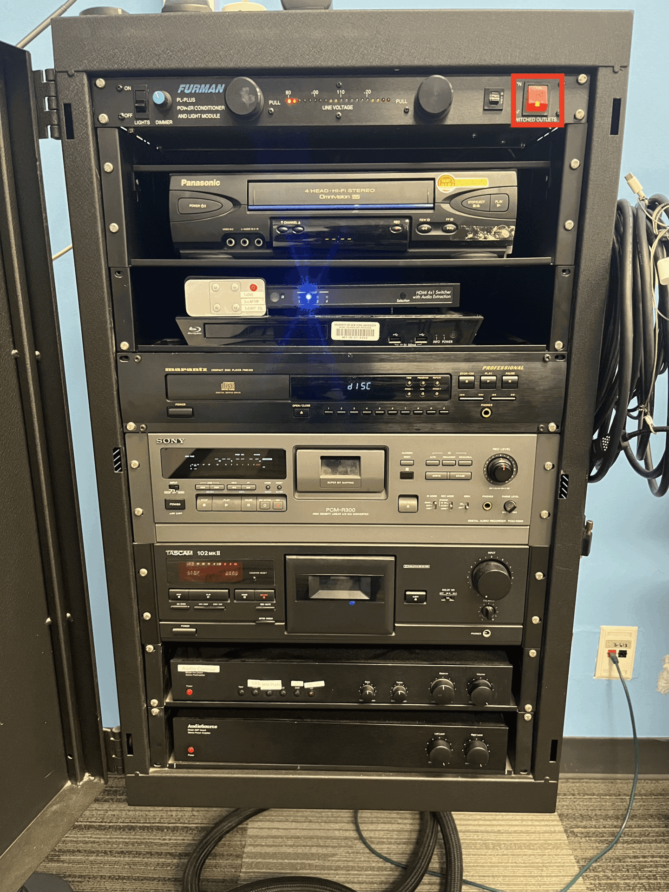

Room 306
Sound Setup
Room PC Sound

- On the top of the rack, there is a black box labeled Furman. Flip the red switch up and turn on the power.
- Towards the bottom of the rack, on the box labelled "Audio Control", press the button labelled "Cart SSL".
- Turn all 4 knobs on the right (bass, treble, balance, and volume) to the vertical/12 'o' clock position. For the bass and treble knobs, you will feel a click at each notch. Make sure they align with the exact vertical position. For the balance knob, there is a click only at the vertical position. For the volume knob, there are no clicks for the notches, so just keep it on the middle.
- On the bottom box in the rack, make sure sure the knobs for left and right are turned to the vertical/12 'o' clock position.
- On the remote strapped to the HDMI switcher, press 3, labelled "CART SSL".
- On the computer, in the menu bar in the top right corner, under sound, ensure that "SSL 2+" is the selected device (it will be highlighted blue).
- Turn up the big blue knob on the SSL labeled "MONITOR LEVEL".
- Turn the grey knob in the top right corner of the SSL all the way to the right towards "USB".
- Once you're done using the PC, turn the Monitor Level knob all the way to 0 and switch off the Furman Power in the rack.
Laptop Sound

- On top of the rack, there is a black box labeled Furman. Flip the red switch on the right side to the on position.
- Towards the bottom of the rack, on the box labelled Audio Control, press the button labelled HDMI Switcher and turn all 4 knobs on the right (bass, treble, balance, and volume) to the middle/vertical position. For the bass and treble knobs, you will feel a click at each notch. Make sure they align with the exact vertical position. For the balance knob, there is a click only at the vertical position. For volume only, roughly in the middle is ok, and adjust as needed.
- On the bottom box in the rack, make sure both knobs (labelled left and right) are turned to the middle/vertical position.
- On the remote strapped to the HDMI switcher, press 2, labelled LAPTOP.
- Plug in either your laptop or your phone to the HDMI adapter attached to the rack.
- Turn the volume up or down on your laptop/phone to adjust the monitor level.
External Sound
- On the podium, the Audio Control Box, select Mini Plug.
- Connect your device to the aux cable attached to the podium.
- (If you're using a Macbook) Click on the Control Center icon in the menu bar at the top right corner, under "Sound", ensure that External Headphones is the selected device (the circle to the left will be blue if so, click it if not).
- (If you're using a Windows laptop) Click on the Speaker icon in the menu bar at the lower right corner, ensure that the device start with Headphones is the selected device.
- Click the Volume up and down buttons on the EXTRON panel on the podium to adjust the volume.
- When done, click DISPLAY OFF to shut down the system.
- Turn the power off on the Furman Box at the bottom of the podium.
Projector Setup
Room PC Projector
- On the Extron panel, tap the screen to wake up and tap "Press to Start".
- The projector should turn on and automatically screen the room PC.
Laptop Projector
- On your laptop, open system preferences (in the dock at the bottom of the screen), click on displays, then look under the "Use as" selection.
- (Only for Macbook) If you would like to mirror the displays (such that the screen on the cart and on the wall are the same) make sure you select Mirror for PTVMZ61. If you would like to extend the displays (such that the two screens are separate), make sure you select "Main Display".
- When done, use the remote to turn off the projector.
- Turn off the red switch on the Furman at the top of the rack.